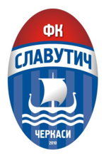
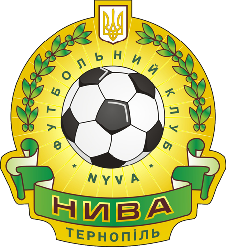

Текстовий On-line
| Кубок України, 1/4 фіналу | ||||
| 26 березня 2014 р., м. Черкаси, 18:00 | ||||
|  | "Славутич" (Черкаси) | 0 1 | "Нива" (Тернопіль) |  |
| Голи | |
|---|---|
| Хтось 44' | |
| Попередження | |
| Вилучення | |
| всі рядки одинакової висоти, просто коли в них нема тексту, вони зменшуються, а при великій кількості збільшуються | |
| 46' | Розпочався другий тайм | |
| Який захоплюючий вийшов перший тайм. Чого тільки не може статися за 45 хвилин, якщо потрібно продемонструвати які намальовані значки і для яких подій матчу. Зустрінемось після перерви | ||
| 45+' | Свисток на перерву | |
| 45' | Арбітр додав 3 хвилини | |
| 44' | Гол! Хтось прорвався по флангу навісив в центр, захисник вибиваючи головою зробив скидку на когось, той наніс удар і м'яч залетів у ліву шістку. Воротар був зловлений на противоході і виявився безсилим у цій ситуації. Красень гол! | |
| 32' | Воротар потягнув м'яч! | |
| 31' | І пенальті... | |
| 30' | За фол останньої надії захисник отримує пряму червону | |
| 25' | Гравець отримав другу жовту. | |
| 20' | Кутовий удар | |
| 16' | А от і власне заміна. | |
| 15' | Цей значок для серйозних травм, коли гравець вже не може продовжити гру і його заміннюють на іншого. | |
| 14' | На поле вибігли медики, надати допомогу | |
| 14' | Комусь дали жовту картку | |
| 12' | А тепер банальне перекатування мяча. Зображення для неважливих подій є файлом з порожнім вмістом. Так само воно ставиться в подіях, що не входять в ігровий час матчу (до матчу чи перерва) | |
| 10' | Небезпечна атака, обрізка, штрафний удар в площину воріт. | |
| 5' | Офсайд. | |
| 1' | Арбітр дав стартовий свисток | |
| "Славутич": ....
Запасні: ..... |
||
| "Нива": Новак, Донець, Лазорик, Грінченко, Романюк, Яневич, Басараб, Загинайлов, Малиш, Мельник, гравець на перегляді.
Запасні: воротар на перегляді, Бадло, гравець на перегляді |
||
| Судді матчу: Франко, Шевченко, Грушевський, Мазепа | ||
| Доброго дня! Офіційний сайт ФК "Нива" розпочинає текстову трансляцію. На стадіоні сонячно, +15 градусів |